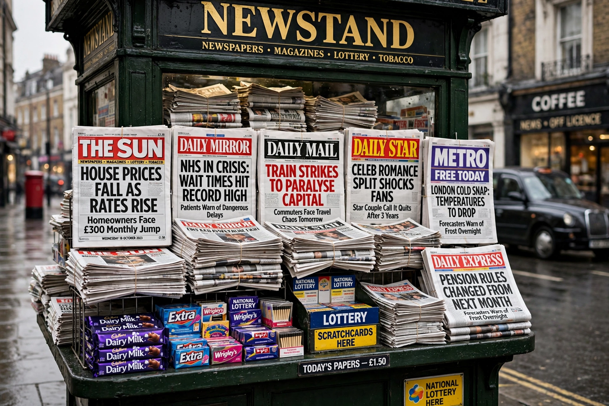

Top stories
The story the whole country will be talking about by breakfast

The Sun — News UK's red-top giant, launched in 1964 and transformed under Rupert Murdoch from 1969 — serves news, football, showbiz and campaigns in the loudest voice in British journalism, with institutions like the Dear Deidre advice column and its famous front pages.
News
The day's UK and world stories, Sun-style
Short, bold and picture-led.
Sport
The back pages: transfers, rows and results
Football dominates, with racing and boxing.
Showbiz
Reality stars and soap news
The celebrity file, updated constantly.
Money
Bills, benefits and deals help
Cost-of-living advice is a franchise beat.
Latest & most read
- The splash: tomorrow's talker, today
- Dear Deidre: the nation's agony aunt
- Football: the transfer saga latest
- Page 3: the history and the argument
About
Background on this news organisation: Wikipedia article.